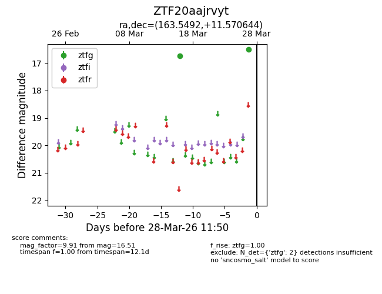
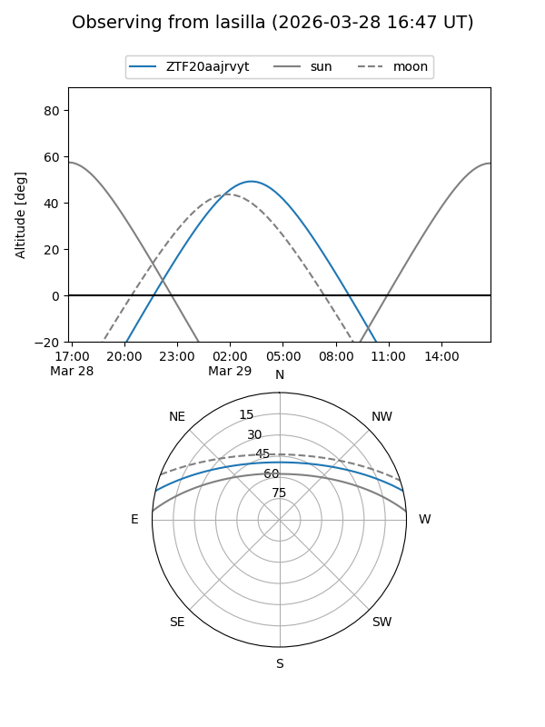
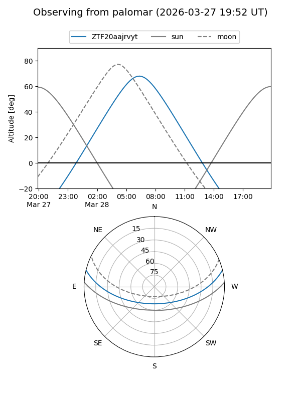

ZTF20aajrvyt
Target ZTF20aajrvyt at 2026-03-28 11:54
Aliases and brokers:
FINK: link
Lasair: link
ALeRCE: link
alt names
ZTF20aajrvyt (ztf,fink_ztf)
Coordinates:
equatorial (ra, dec) = 163.5492,+11.57064
equatorial (HMS+DMS) = 10:54:11.81,+11:34:14.32
galactic (l, b) = (236.6814,+58.40163)
Flags:
Photometry:
last ztfg=16.51
2 ztfg detections
Lightcurve

Visibility


Additional plots